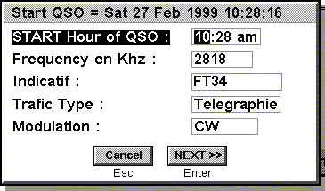
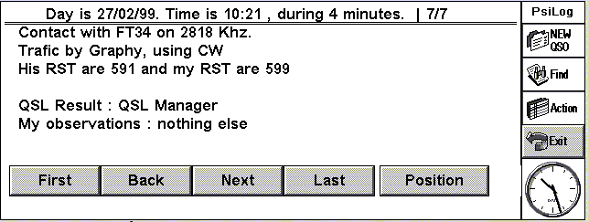
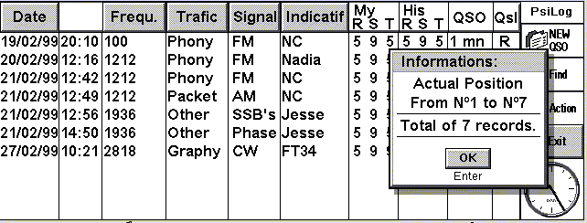
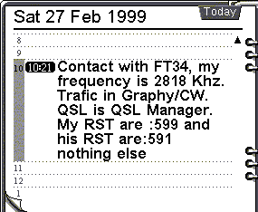

PSILOG- pour le Psion séries 5.
Merci à tous ceux qui m'ont aidés.
Ce programme à été développé à l'origine en Français, mais vu l'utilisation de ce dernier par des personnes majoritairement anglo-saxons, j'ai décidé de ne plus maintenir la version "Française".
De plus les radioamateurs sont courament habitués au termes anglo-saxons.
Néamoins, j'ai décidé de mettre le code source de ce programme en libre disposition pour toute personne désirant le modifier ou le traduire, ce qui n'empèche pas que je reste l'unique auteur et responsable des droits de diffusion de ce dernier.
Ce programme est un carnet de trafic pour les radioamateurs. Il garde en mémoire vos QSOs (fréquences, indicatifs, durée de la liaison, QSL, mode de trafic, ...), l'historique de la configurations de votre stations et permet d'envoyer toutes ces informations dans un agenda et une base de données OPL32.
Dernière mise à jour le 26/02/99
Versions
Version 1.5
Ajout de la conversion de distance, de calcul de fréquences et de longueurs d'ondes (prévue fin Mars).
Version 1.1(actuellement)
Actuellement dans cette version.
Il est destiné à sortir avec quelques corrections de Bugs.
| Mise en
distribution sur les différents sites Webs concernant le
Psion S5. Mise à disposition sur ce site. Télécharger PsiLog (fichier ZIP + programme) Télécharger PsiLog (fichier ZIP + programme au format .sis) |
Version 1.0
| Mise en distribution sur les différents sites Webs concernant le Psion S5. |
Version 0.6 Béta
| Date de mise en route le 1 Janviers 1999. |
Version 0.5 Béta
| Fin du premier trait de conception, et mise en test le 12 Décembre 1999 |
Informations sur le programme
 |
Enregistrement d'un nouveau QSO |
 |
Vue en mode Texte |
 |
Vue en mode tableau |
 |
Vue dans l'agenda. |
Installation:
Vous devez dispossez des fichiers suivant en plus sur votre machine:
| Agenda2.sis à installer avant | aller voir le site de Andy Clarkson | |
| System.oxh | déjà dans le Psion series 5 | |
| Date.oxh | déjà dans le Psion series 5 |
Pour le Series 5:
Mettre le dossier 'PsiLog' dans le psion sous: C:/System/Apps/
(D:/ -> Non encore disponible)
Sous l'émulateur:
Mettre le dossier 'PsiLog' sur votre disque sous: :/Epoc32/Win/C/System/Apps/
Pour les Radioamateurs et utilisateurs de Psion S 5
| D'autres sites à visiter : | pour le packet | http://www.cix.co.uk/~hzk/psion5.htm |
| pour les locators | http://www.cix.co.uk/~hzk/psion5.htm |
Pour les fanas de Psion
| D'autres sites à visiter: | Le 5eme Site | http://www.psionist.com/ |
| PDA Central | http://eunet.pdacentral.com/5alive/index.htm |
Pour avoir le
fichier source écrivez à l'auteur.
E-Mail: gwam@club-internet.fr